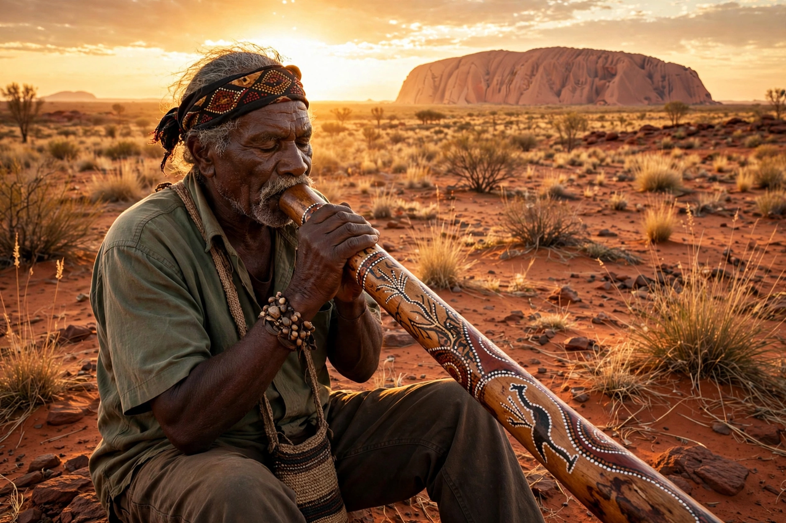

Aboriginal Australians
From Wikipedia, the free encyclopedia

Aboriginal Australians are the various Indigenous peoples of the Australian mainland and its islands (excluding the Torres Strait Islanders, who are a distinct Melanesian people). Descended from the first humans to reach Australia at least 50,000–65,000 years ago, they comprise hundreds of nations with distinct languages and cultures — among the oldest continuous cultures on Earth.
History before colonisation
Archaeological evidence, including the Madjedbebe rock shelter, suggests human occupation around 65,000 years ago. Aboriginal societies developed complex kinship systems, land management — including fire-stick farming — trade networks, rock art traditions (such as the Gwion Gwion paintings) and the cosmology of the Dreaming, which anchors law and identity in ancestral beings and country.
Colonisation and its aftermath
British colonisation from 1788 brought dispossession, introduced disease and frontier violence that devastated the population, which fell from perhaps 750,000–1,000,000 to under 100,000 by the early twentieth century. Assimilation policies produced the Stolen Generations — children removed from their families — formally apologised for by Prime Minister Kevin Rudd in 2008.
Rights and recognition
Milestones include the 1967 referendum granting federal power to legislate for Aboriginal people and census inclusion; the land rights movement (Northern Territory act, 1976); the High Court's Mabo decision (1992) overturning terra nullius and establishing native title; and the rejected 2023 referendum on an Indigenous Voice to Parliament. Aboriginal Australians number over 800,000 (about 3.2% of the population, 2021 census) and continue to face marked disparities in health, life expectancy and incarceration addressed — with limited success — by Closing the Gap policies.